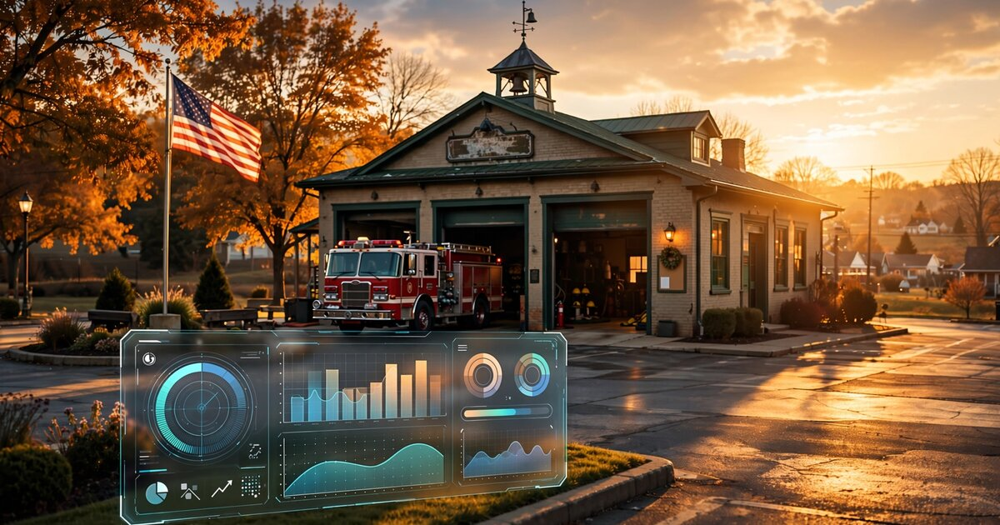

Fire Department ISO Rating Optimization SaaS
Every home in America pays fire insurance premiums based on a single score assigned to the local fire department by a company called Verisk. The score ranges from 1 (best) to 10 (worst). Improving by one class saves homeowners 4-8% on premiums. In 2024, Oklahoma communities that improved their scores collectively saved residents $22 million. Yet the scoring system is opaque, the 267-page manual costs hundreds of dollars, and 82% of US fire departments are run by volunteers who diagnose the problem with a spreadsheet if they diagnose it at all. Nobody sells software that reverse-engineers the score, identifies the cheapest improvements, and tracks progress toward the next class.

The Problem
Twenty-two million dollars in a single year. That is how much Oklahoma homeowners saved on fire insurance premiums in 2024, according to the Oklahoma Insurance Department, after the state's Fire Protection Classification Division helped communities improve their Public Protection Classification (PPC) ratings, a program that upgraded nearly 20% of Oklahoma's 900+ fire protection areas and tripled the number of communities earning the top Class 1 designation from three to nine.
The PPC system, administered by Verisk (formerly the Insurance Services Office, or ISO), grades the fire protection capability of more than 47,500 fire protection areas across the United States on a scale from Class 1 (superior) to Class 10 (does not meet minimum criteria), and virtually every US property insurer uses these scores when setting homeowner insurance premiums. According to Tennessee's Municipal Technical Advisory Service (MTAS), the premium impact is substantial: a Class 5 community pays roughly 37% less than a Class 10 community, a Class 1 community pays 47% less, and with national average homeowner insurance premiums sitting at $2,424/year (Bankrate, 2026), that gap amounts to hundreds of dollars per household per year compounding indefinitely.
The score is derived from Verisk's Fire Suppression Rating Schedule (FSRS), a manual containing the criteria for evaluating fire protection. It weighs four components:
| Component | Weight | What It Measures |
|---|---|---|
| Fire department | 50% | Engine companies, ladder companies, deployment analysis, equipment, pump capacity, reserve apparatus, personnel, training hours |
| Water supply | 40% | Hydrant size, type, installation; flow testing frequency; water system capacity; supply redundancy |
| Emergency communications | 10% | 911 dispatch capabilities, call-handling time, personnel, equipment redundancy |
| Community risk reduction | 5.5% bonus | Fire prevention codes, public fire safety education, fire investigation programs |
Points are totaled across categories and converted to a class, where Class 1 requires 90+ points, Class 5 requires 50-59.99, and Class 10 means scoring below 10 points overall, with each class upgrade typically saving homeowners 4-8% on fire insurance premiums as Oklahoma Insurance Department Commissioner Glen Mulready confirmed in October 2025.
Here is what a typical fire chief working toward improvement actually faces: a scoring system with hundreds of individual line items spread across four major categories, each with sub-criteria that interact in non-obvious ways, where training hours count differently depending on whether they are structural, driver/operator, or officer-level, where a hydrant testing program earns zero partial credit if tests happen every 6 years instead of every 5, and where adding a ladder truck worth $1.2 million might improve the score by 3 points while a $500 record-keeping improvement in hydrant inspection documentation might improve it by 5. Without modeling the FSRS, you cannot know which dollar produces the most rating improvement, and most departments never model it at all.
Why Most Departments Don't Improve
The United States has approximately 29,452 fire departments (NFPA, 2020), and of these, 64% are entirely volunteer (approximately 18,873 departments) while another 18% are mostly volunteer (approximately 5,335), meaning that these volunteer-dependent organizations protect about 30% of the US population across overwhelmingly rural and suburban communities where budgets are tight and professional staff is nonexistent.
A volunteer fire chief is typically an unpaid community member with a full-time day job who manages 10-40 volunteers, maintains aging apparatus, responds to emergencies, and handles administrative duties on nights and weekends, and for that person, studying a 267-page rating schedule, identifying scoring gaps, building a multi-year improvement plan, and preparing documentation for a Verisk survey ranks somewhere between aspirational and physically impossible given the competing demands on their time.
The information asymmetry is severe, because while Verisk operates a free online portal called Mitigate that shows departments their current overall score and comparisons to peers, Mitigate is fundamentally an information dashboard rather than a planning tool: it tells you where you stand but does not tell you what to do next, does not model the impact of specific improvements before you spend money on them, and does not generate the documentation package that earns full credit during a survey. The difference between knowing your score and knowing how to improve it is the gap this startup fills.
The result is predictable: departments that happen to have a chief with FSRS expertise, or a city manager who hires a $10,000 consultant, improve their ratings and save their community millions in aggregate insurance premium reductions, while departments without that expertise stay stuck at whatever class they inherited, and their residents quietly overpay on insurance every year, never knowing that a better score was achievable for a fraction of what they are losing.
The Gap in the Market
The fire department software market is projected to grow from $1.2 billion in 2025 to $3.5 billion by 2033 at a 14.2% CAGR, according to Data Horizon Research, but the entire market is dominated by records management and incident reporting platforms that solve operational problems without ever touching the structural rating that determines what every homeowner in the district pays for fire insurance:
| Company | What They Do | What's Missing |
|---|---|---|
| ESO Solutions | Market leader in fire/EMS records management. NFIRS reporting, ePCR, incident documentation. Used by thousands of departments. | No PPC scoring analysis. No FSRS modeling. No improvement planning. ESO tracks what happened; it doesn't help departments improve their structural rating. |
| Zoll Records | Incident reporting and records management with configurable forms. Strong in EMS documentation. | Same gap. Zoll captures operational data but has no feature for translating that data into PPC improvement actions. |
| Tyler Technologies / CentralSquare | Enterprise public safety software. CAD, RMS, and analytics for larger departments and municipalities. | Oriented toward operational efficiency, not ISO survey preparation. No FSRS scoring engine. |
| First Due | Newer entrant with modern UI. Pre-fire planning, incident management, inspections. Growing fast. | Covers fire prevention data collection but doesn't connect it to PPC scoring or quantify the insurance premium impact for the community. |
| Verisk Mitigate (ISO's own tool) | Free dashboard showing current PPC score, peer comparisons, and survey timelines. Available to all fire chiefs. | Information only. Shows scores, not improvement paths. No "what-if" modeling. No documentation generation. Verisk is the referee; they have no incentive to be the coach. |
A few consulting firms offer manual PPC improvement services, typically charging $5,000-15,000 per engagement to review a department's operations, identify gaps, and recommend changes, but these are one-time projects with no ongoing tracking, no software tool, and no scalability: the consultant visits, writes a report, and leaves, and whether the department implements the recommendations and earns the improved rating is anyone's guess.
The Solution
A SaaS platform that functions as a PPC improvement engine for fire departments, translating the opaque FSRS into specific, prioritized, budget-aware actions:
1. FSRS scoring engine ($0 to set up, included in subscription): The department answers a structured questionnaire covering all four FSRS categories, including apparatus inventory, staffing levels, training hours by type, hydrant count and testing schedule, water supply capacity, dispatch equipment, and fire prevention programs, and the platform calculates an estimated PPC score across each category while identifying the specific line items where points are being lost. This is not a guess, because the FSRS scoring criteria are published in detail; nobody has simply productized the calculation into software that a volunteer chief can use without reading the 267-page manual.
2. Improvement simulator ("what-if" modeling): The platform lets the chief model changes before committing budget. "What happens to my score if I add 40 hours of annual driver/operator training?" "What if I move hydrant flow tests from every 6 years to every 5?" "What if I purchase a 75-foot quint instead of a Class A engine?" Each scenario shows the projected point change, the estimated class impact, and the resulting community insurance savings. The ROI of every dollar becomes visible.
3. Improvement roadmap with cost-per-point ranking: The platform generates a prioritized improvement plan sorted by cost per PPC point gained, placing the cheapest improvements first (documentation formalization, training hour tracking adjustments, hydrant inspection scheduling changes that cost nothing but volunteer time) and the capital-intensive improvements last (new apparatus purchases, station construction, water infrastructure upgrades that require bond financing). For a department at Class 6 wanting to reach Class 4, the roadmap shows the minimum-cost path, the estimated timeline based on budget constraints, and which improvements to tackle in which order to cross class thresholds as quickly as possible.
4. Survey preparation and documentation generator: When Verisk schedules a PPC survey (typically every 5-10 years, or upon department request), the department needs to present documentation proving its capabilities across every scoring dimension: training records broken down by type and hours, apparatus maintenance logs showing in-service status, hydrant inspection certificates with flow test results, water supply test data, dispatch center certifications, and fire prevention education program records. The platform maintains all of this in survey-ready format organized by FSRS section with gaps highlighted, so the department walks into the survey with a complete binder instead of a box of miscellaneous paperwork accumulated over the previous decade.
5. Community impact calculator: The platform generates a one-page report showing the town council or county commissioners exactly what a PPC improvement means in dollars. "Improving from Class 6 to Class 4 is projected to save the community's 3,200 households an average of $145/year each, totaling $464,000 annually in reduced insurance premiums. The recommended improvements cost $85,000 over 2 years." This document justifies the fire department's budget request with a number every elected official understands: lower taxes on constituents.
6. Ongoing tracking and alert system: PPC ratings aren't static. Training lapses, apparatus reaches end-of-life, hydrant testing falls behind schedule. The platform monitors all scoring inputs and sends alerts when something threatens the current rating. "Your department's annual training hours dropped below the FSRS threshold for full credit in Q3. Add 12 hours of structural firefighting training before year-end to maintain your Class 4 score."
The Math: What One Class Improvement Is Worth
Consider a fire district in rural Tennessee covering 4,500 homes with an average homeowner insurance premium of $2,672/year (Bankrate state data, 2026). The department currently holds a PPC Class 6 rating.
Scenario A: Status quo (Class 6)
The community's fire insurance component is set at the Class 6 rate. MTAS data indicates Class 6 pays approximately 65 cents on the dollar relative to Class 10. No action taken, no savings realized.
Scenario B: Improvement to Class 4
Class 4 pays approximately 60 cents on the dollar. The improvement from Class 6 to Class 4 represents roughly a 7.7% reduction in the fire-protection portion of premiums ((65-60)/65). Fire protection typically accounts for 30-40% of a homeowner's total premium. At the midpoint (35%), the per-household saving is: $2,672 × 0.35 × 0.077 = $72/year per home.
Across 4,500 homes: $324,000 per year in reduced premiums flowing to residents.
What did the improvement cost?
The specific improvements for this hypothetical department: formalizing a hydrant inspection program (25 hours of volunteer time, $0 direct cost, but the platform tracks and documents the inspections for FSRS credit); upgrading driver/operator training to meet FSRS hour thresholds ($2,400 in overtime/materials); purchasing three SCBA units to meet the minimum-per-apparatus requirement ($18,000); and documenting an existing fire prevention education program that was never reported to Verisk ($0 direct cost, 4 hours of data entry). Total investment: approximately $20,400.
Community ROI in year one: $324,000 / $20,400 = 15.9x. Payback period: 23 days.
The Ohio Fire Executive Program documented a real-world case where a town of 7,000 homeowners improved by five ISO classes. Each household saved $61-$174 annually, and the community saved over $4 million during the ISO rating period. The Oklahoma Insurance Department confirmed statewide savings of $22 million from PPC improvements in 2024 alone. These are not theoretical projections. This is documented money flowing back to homeowners.
Revenue Model
| Revenue Stream | Amount | Notes |
|---|---|---|
| Annual SaaS subscription (per department) | $1,800-3,600/year | Tiered by community size. Includes scoring engine, improvement simulator, documentation management, alert system. |
| Survey preparation package | $2,500 one-time | Comprehensive survey-ready documentation package generated before a scheduled Verisk evaluation. Premium add-on. |
| Community impact report | Included | Auto-generated report for council/commission budget presentations. Key feature for justifying the subscription cost. |
| State association licensing | $25,000-75,000/year | White-label deal with state fire marshal offices or state firefighter associations (like Oklahoma's OID program). Provides the platform to all member departments at a bulk rate. |
| FEMA AFG grant integration (referral fee) | 5-8% of grant value | The platform identifies FEMA Assistance to Firefighters Grant (AFG) opportunities aligned with the department's improvement plan and assists with application documentation. Grant writers typically charge 5-10%. |
Unit economics on a single department: Customer acquisition via state association partnerships and fire service conferences. Blended CAC: ~$400 (low-touch, inbound from association referral) to ~$1,200 (direct outreach + demo). Average annual contract value: $2,400. Gross margin at scale: 85%+ (pure SaaS, no hardware). Churn: low, because PPC surveys are multi-year cycles and departments need continuous tracking. Estimated LTV at 6-year average retention: $14,400. LTV:CAC ratio: 12-36x.
Market Size
TAM: 29,452 US fire departments. At a blended $2,400/year average subscription: $70.7M/year in SaaS revenue. Adding survey preparation packages (assuming 20% of departments in any given year at $2,500) and state association licensing: approximately $95M/year total addressable.
SAM: Focus on volunteer and mostly-volunteer departments (24,208 departments, 82% of total), which lack internal expertise for FSRS analysis and have the most to gain from a systematic improvement tool. Many career departments already have dedicated staff for this. At $2,400/year: $58.1M/year.
SOM (year 3): 800 departments across 8-10 state association partnerships, at blended $2,400/year = $1.92M ARR. 3.3% penetration of SAM. Three state association deals at $50K/year average add $150K. Total year 3 revenue: approximately $2.07M.
Why Now
Insurance premiums are rising faster than inflation. National average homeowner insurance premiums increased 20% over the past two years, according to Insurify's 2025 American Homeowner Insurance report, with a further 8% increase projected for 2025, pushing the average to $3,520. In high-risk states, increases are far steeper: Louisiana (+27%), California (+21%), Iowa (+15%). Communities are desperate for any mechanism to reduce premiums. Improving PPC rating is one of the few levers local government actually controls.
Oklahoma proved the model works at state scale. The Oklahoma Insurance Department's Fire Protection Classification Division actively assists departments with PPC improvement. Their 2024 results ($22M in premium savings, 20% of fire protection areas upgraded) demonstrate that systematic PPC improvement is achievable, replicable, and produces measurable community savings. Oklahoma did it with state employees and phone calls. Software could do it in every state simultaneously.
Volunteer firefighter numbers are at historic lows. NFPA data shows volunteer firefighter numbers dropped from 814,850 in 2015 to 676,900 in 2020, the lowest level since tracking began in 1983. Fewer volunteers mean departments struggle with the personnel-dependent portions of the FSRS. A platform that identifies which personnel thresholds matter most and helps departments maximize credit for the volunteers they do have becomes more valuable as staffing declines.
FEMA AFG grants fund exactly this kind of improvement. The Assistance to Firefighters Grant program provides $350+ million annually to fire departments for equipment, training, and capability improvements. A platform that maps a department's FSRS gaps directly to AFG-eligible expenses and assists with grant applications creates a built-in funding mechanism for the improvements it recommends. The department doesn't pay for the equipment out of its operating budget. It gets a federal grant, improves its PPC, and the community's insurance premiums drop.
Startup Costs
| Category | Cost | Notes |
|---|---|---|
| FSRS scoring engine development (6 months) | $220K | 2 backend engineers + 1 domain expert (retired fire chief or ISO surveyor). Encode all FSRS criteria into a rules engine. The FSRS is published; this is implementation, not reverse-engineering. |
| Web application (dashboard, simulator, reports, 5 months) | $160K | 1 full-stack + 1 frontend engineer. Department onboarding flow, what-if simulator, improvement roadmap, documentation management, community impact reports. |
| Domain expert advisory board (year 1) | $40K | 3-5 retired fire chiefs or ISO surveyors retained as advisors to validate scoring accuracy and improvement recommendations. Credibility matters enormously. |
| Pilot program (20 departments, subsidized) | $15K | Free 6-month subscriptions for initial departments. Goal: validate scoring accuracy against actual Verisk evaluations and collect case studies. |
| State association conference presence (year 1) | $30K | Booths at FDIC International, state fire chiefs' association conferences. Demo units, case study handouts. The fire service buys through trust, and trust is built face-to-face. |
| Legal and compliance | $15K | Verify that productizing FSRS scoring does not infringe Verisk IP. The criteria are published for public use; the scoring engine is the startup's original work. |
| Operating buffer (12 months) | $45K | Cloud hosting, authentication, email, support tooling. |
| Total | $525K |
Limitations
The FSRS scoring criteria are published, but the exact weights and sub-scoring for individual line items are not fully transparent. Verisk does not publish a complete algorithm that would allow perfect score prediction from input data alone. The startup's scoring engine will be an approximation based on the published schedule, validated against real department evaluations. Accuracy may vary, especially at the margins between classes. The pilot program exists specifically to calibrate the model against actual Verisk scores, but some gap between predicted and actual PPC will persist.
The $72/year per-household savings calculation assumes fire protection accounts for 35% of a homeowner's total insurance premium. This percentage varies by insurer, policy type, and state regulatory environment. Some insurers weigh PPC more heavily than others. In states where insurers have moved toward catastrophe-model-based pricing (Florida, California, Louisiana), PPC may carry less weight in premium calculations than in traditional markets. The community impact calculator should be presented as an estimate, not a guarantee.
The 29,452 department figure is from NFPA's 2020 survey and may have shifted slightly. Department creation, consolidation, and closure are ongoing. More importantly, the addressable market is smaller than the total department count because many departments share a fire protection area (mutual aid districts) and some PPC ratings apply to multi-department jurisdictions rather than individual departments.
Strongest Counterargument
Verisk could build this themselves tomorrow. They already have the FSRS. They already have every department's current score. They already run the Mitigate portal. Adding a "what-if" simulator, an improvement roadmap, and a documentation generator to Mitigate would eliminate the startup's core value proposition overnight. Verisk has 9,000+ employees, $2.8 billion in annual revenue, and deep relationships with every fire chief in America through the survey process.
The counterpoint: Verisk's business model depends on being a neutral evaluator. They grade fire departments the way credit rating agencies grade bonds. If Verisk also sold the improvement playbook, they would face a structural conflict of interest: are they grading fairly, or grading generously to justify their consulting revenue? Credit rating agencies faced exactly this criticism during the 2008 financial crisis (rating the securities they helped structure). Verisk has strong institutional reasons to remain the referee and not become the coach. Their Mitigate portal has existed for years without evolving into an improvement tool, which suggests this restraint is deliberate, not accidental. A third-party platform that uses published FSRS criteria to help departments improve does not threaten Verisk's evaluator role. It actually drives more survey requests, which generates more revenue for Verisk's classification business.
What You Can Do
If you're a volunteer fire chief: Log into Verisk's Mitigate portal today (it's free) and check your department's current PPC score and the breakdown by category. Identify your weakest category. If it's water supply (40% of the score), talk to your municipal water utility about hydrant testing schedules. Many departments lose full credit in the water supply category simply because hydrant flow tests happen on a 6-year cycle instead of the 5-year cycle the FSRS requires. Changing the testing schedule costs the water department a few days of staff time and earns the fire department significant points.
If you're a city manager or county commissioner: Ask your fire chief what PPC class your community holds and when the next Verisk survey is scheduled. Then ask your insurance commissioner's office (every state has one) whether they offer PPC improvement assistance, as Oklahoma does. Calculate the community-wide premium impact: multiply the number of residential properties by an estimated $50-175 per household per class improvement. That number, compared to the cost of the specific improvements required, is your ROI case for funding fire department upgrades.
If you're building this: Your first hire after engineering should be a retired ISO field surveyor. These are the people who have personally evaluated hundreds of departments and know exactly which line items departments commonly miss. The surveyor's credibility with fire chiefs will be your single most important sales asset. List price matters less than the fact that a person who used to grade departments is now helping them pass. Start with one state association partnership, prove the savings numbers against actual Verisk re-evaluations, and expand state by state. FDIC International (the fire service's annual conference in Indianapolis, 30,000+ attendees) is your launch venue.
The Bottom Line
The PPC system is one of the most direct examples of a government-adjacent score affecting household finances in America. Improving it costs thousands; the savings compound across every home in the fire district for years. The scoring criteria are public, the calculation is known, and the improvement playbook is well-understood by the small number of fire service professionals who specialize in it. What's missing is software that makes that expertise accessible to the 24,000 volunteer departments that can't afford a consultant, can't parse a 267-page manual, and don't realize their community is overpaying by $50-175 per home per year because their chief never had time to study the rating schedule. Oklahoma proved this works at scale with state employees and phone calls. Now imagine doing it with software in all 50 states at once.